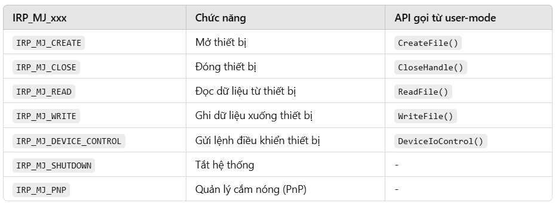
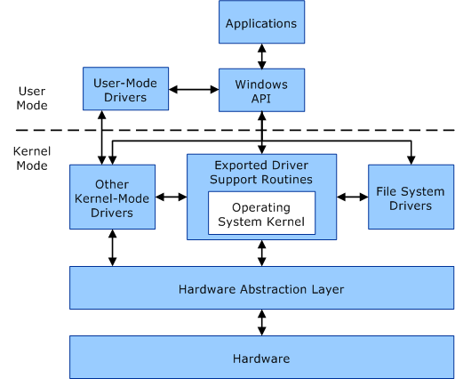
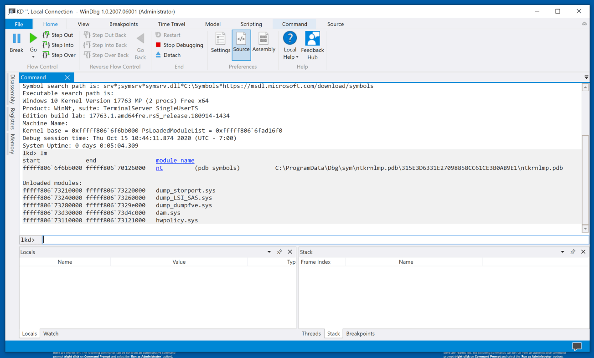

Introduction
Microsoft Windows (Windows) là một họ hệ điều hành dựa trên giao diện
người dùng đồ hoạ được phát triển và được phân phối bởi Microsoft. Nó
bao gồm một vài các dòng hệ điều hành, mỗi trong số đó phục vụ một phần
nhất định của ngành công nghiệp máy tính. Các dòng Windows hiện tại gồm
Windows NT, Windows Embedded Compact và Windows Phone; chúng có thể bao
gồm các phân họ, ví dụ như Windows Embedded Compact (Windows CE) hoặc
Windows Server. Các dòng gia đình Windows đã bị ngừng gồm Windows 9x,
Windows Mobile và Windows Phone.
Windows OS evolution:

Trong bài viết này mình sẽ giới thiệu các khái niệm về Windows
liên quan tới việc viết & phân tích malware.
Related tools
-
Một số tool phổ biến mà mình sử dụng khi phân tích malware trên
Windows:
- PEiD: Phần mềm dùng để detect packer của file exe.
- IDA Pro: Disassembler, decompiler.
-
Detect It Easy: Dùng để detect packer, compiler, thông tin file
exe,... (best).
- Resource Hacker: Dùng để extract resource từ file exe.
Header File
Trong malware writing, file .h (gọi là header file - tệp tiêu đề) dùng
để khai báo các hàm, biến, macro, cấu trúc dữ liệu hoặc định nghĩa cần
thiết cho nhiều file mã nguồn .c hoặc .cpp. Việc tách các khai báo ra
file .h giúp mã nguồn dễ tổ chức, dễ bảo trì, và đặc biệt trong malware,
giúp chia nhỏ logic thành các module riêng biệt (ví dụ: module ẩn tiến
trình, keylogging, communication). Ngoài ra, một số malware còn dùng .h
để giấu payload dưới dạng mã hóa hoặc định nghĩa inline shellcode nhằm
tránh bị phát hiện trong các file .c chính.
Tuy nhiên, phải nhớ rằng .h không tự mình "gọi" tới bất cứ file thực thi
nào, .h chỉ khai báo những gì tồn tại - ví dụ như hàm, class, biến - để
lúc code .cpp hoặc chương trình chính, biên dịch viên biết rằng hàm
này/cái này sẽ có ở đâu đó. Còn lúc compile chương trình, linker (trình
liên kết) mới tìm đến .dll, .lib, .so để thực sự lấy code đã build rồi.
Lưu ý là trong các file .h không cần phải khai báo hàm thuộc về thư viện
(.dll,...) nào, compiler sẽ tự tìm đến các thư viện này để lấy hàm. Một
.h có thể định nghĩa nhiều hàm từ nhiều thư viện khác nhau. Nếu có 2 thư
viện khác nhau có cùng tên hàm sẽ gây lỗi, do đó chúng ta cần sử dụng
tới namespace để phân biệt. Ví dụ trong C++, chúng ta thường sử dụng câu
lệnh "using namespace std;" để sử dụng các hàm trong thư viện std mà
được khai báo trong file iostream.h. Nếu không có câu lệnh này, chúng ta
sẽ phải gọi hàm bằng cách "std::cout" thay vì chỉ cần "cout".
Common Header File
- ntifs.h: Windows Internal File System (IFS) và NT kernel APIs.
-
windef.h: các kiểu dữ liệu cơ bản trong Windows (DWORD, HANDLE,...).
-
intrin.h: intrinsic functions - hàm đặc biệt mà compiler dịch trực
tiếp thành lệnh máy (assembly) mà không dùng syscall, sẽ nhanh hơn
syscall nhưng chỉ tương tác được CPU & RAM.
Dynamic Link Library
DLL (Dynamic Link Library) là thư viện liên kết động, chứa mã và dữ liệu
có thể được sử dụng bởi nhiều chương trình cùng lúc để tiết kiệm bộ nhớ
và cải thiện hiệu suất. Điểm đặc biệt là sau khi DLL được load vào bộ
nhớ, nó có thể được dùng chung cho nhiều chương trình. Và với sự đa dạng
của các DLL, các nhà phát triển có thể sử dụng các DLL có sẵn thay vì
viết lại mã từ đầu.
Cấu trúc của file DLL tương tự như file exe, chỉ khác nhau ở bit flag
thể hiện loại file là exe hay dll. Bên cạnh đó file DLL sẽ có nhiều
export hơn. DLL cũng có hàm main (DLLMain) nhưng không giống như hàm
main của exe, hàm main của DLL sẽ được gọi khi DLL được load vào bộ nhớ,
thread mới và khi DLL bị unload. Điều này giúp các DLL quản lí tài
nguyên của mình một cách tốt hơn.
Common DLLs
-
kernel32.dll: là một trong những file DLL thực hiện tính năng quan
trọng như quản lí và phân bổ memory, files và phần cứng.
-
advapi32.dll: chứa các hàm liên quan đến security, registry, event
log, service control manager, và file system.
-
user32.dll: chứa các hàm liên quan đến giao diện người dùng như tạo
cửa sổ, xử lí message, và các hàm liên quan đến các control.
-
gdi32.dll: chứa các hàm liên quan đến graphic device interface như vẽ
hình, text, và các hàm liên quan đến font.
-
ntdll.dll: chứa các hàm liên quan đến kernel mode như memory
management, process và thread management, và các hàm liên quan đến
system.
-
wsock32.dll và ws2_32.dll: Wsock32.dll và ws2_32.dll chứa các hàm liên
quan đến network như socket và các hàm liên quan đến network.
-
wininet.dll: chứa các hàm liên quan đến internet như http, ftp, và các
hàm liên quan đến internet.
Running DLLs
Đối với file .exe, chúng ta có thể dễ dàng chạy bằng cách double click.
Nhưng đối với file DLL thì khác. Thông thường chúng ta sẽ cần một file
exe khác để chạy file DLL đó. Một cách khác để chạy file DLL là thông
qua rundll32.exe. Ví dụ, để chạy file DLL có tên là ProjectMeow.dll với
hàm export là HelloWorld, chúng ta có thể sử dụng lệnh sau trong cmd.
rundll32.exe ProjectMeow.dll, HelloWorld

Thay vì gọi hàm bằng tên cũng có thể gọi qua ordinal của hàm đó, ví dụ
thay HelloWorld ở lệnh trên bằng #5.
Lưu ý rằng không phải file DLL nào cũng có thể sử dụng rundll32 để chạy.
Nếu file DLL export ra class thay vì function thì không thể chạy bằng
rundll32.
DLL Analysis
File DLL cũng là một file PE, do đó cũng có thể phân tích bằng các công
cụ như IDA Pro, Ghidra, ... Với IDA Pro, để debug file .dll, chúng ta
cần chọn debugger là "Local Win32 debugger". Tiếp theo thì vào process
option để đặt đường dẫn đến chương trình sẽ load DLL. Sau đó thì có thể
đặt breakpoint và debug như bình thường được rồi.
Windows Kernel
Từ bài viết
Reverse Engineering Overview
mình đã giới thiệu chung về kernel. Trong phần này mình sẽ tập trung vào
kernel của Windows.
Driver & Kernel
Trong Windows, Device Driver (file .sys) là một nhánh của Service
(kernel-mode service), là thành phần phần mềm chạy trong kernel mode, có
nhiệm vụ giao tiếp giữa phần cứng và hệ điều hành hoặc giữa các ứng dụng
user-space với kernel. Các driver cung cấp interface để chương trình
trong user mode có thể gửi yêu cầu đến kernel mode, giúp thực hiện các
thao tác với thiết bị hoặc tài nguyên hệ thống. Driver có thể kể tới
như: driver của card mạng, driver của card âm thanh, driver của ổ
cứng,... Driver cũng được lưu trữ thông tin ở registry giống như các
service.
Việc phân tích driver là khó vì khi program sử dụng driver thì nó sẽ gọi
tới Device Object thay vì gọi trực tiếp tới driver. Các Device Object
này được tạo bởi driver và có thể có nhiều device object một lúc. Ví dụ
khi cắm USB vào máy, driver xử lí USB drive sẽ tạo 1 device object cho
USB drive đó (tên "F:drive" chẳng hạn). Khi program muốn ghi dữ liệu vào
USB drive, nó sẽ gọi tới device object "F:drive" thay vì gọi trực tiếp
tới driver. Nếu có một USB khác cắm vào máy, driver sẽ tạo thêm device
object khác (tên "G:drive" chẳng hạn).
Driver cũng được load vào memory giống như DLL. Ở DLL có DLLMain, ở
driver có DriverEntry. DriverEntry sẽ được gọi khi driver được load vào
memory để tạo một mảng function pointer (giống như export table của
DLL). Khi tạo device object, nó sẽ thiết lập function pointer tương ứng.
Mảng function pointer này còn được gọi là MajorFunction, các hàm trong
nó có thể được gọi từ user mode. Một số hàm thường thấy:

Từ "thiết bị" ở bảng trên được hiểu là handle của driver.
Cấu trúc dữ liệu chứa danh sách Device Object, MajorFunction,
DriverEntry và DriverUnload được gọi là Driver Object.
Để giao tiếp với các device object (chẳng hạn "F:drive" ở trên) bằng
code, chúng ta có thể sử dụng DeviceIoControl. DeviceIoControl có đầu
vào là handle của device object, code của control code (được định nghĩa
trong driver), buffer input và output, và buffer size.

Interrupt Handler
-
Interrupt Handler là một hàm được gọi khi có một interrupt xảy ra.
Interrupt là một tín hiệu từ phần cứng hoặc phần mềm yêu cầu CPU dừng
thực hiện công việc hiện tại và chuyển sang xử lý một công việc khác.
-
Hardware Interrupt: là tín hiệu từ phần cứng như bàn phím, chuột, ổ
cứng,...
-
Software Interrupt: là tín hiệu từ phần mềm như exception, syscall,...
Kernel Debugging with WinDbg
Phần này mình sẽ nói về cách sử dụng WinDbg để debug kernel của Windows
cũng như phân tích rootkit.
Hiện tại mình đang sử dụng máy ảo Windows 10 để debug kernel và máy host
dùng WinDbg để kết nối tới máy ảo. Có nhiều cách để kết nối WinDbg với
máy ảo như: serial port, network,... Mình sử dụng network để kết nối.
Máy Windows 10 mình sẽ dùng Bridged Adapter, sau đó mở cmd và chạy lệnh
sau:
bcdedit /debug on
bcdedit /dbgsettings net hostip:<IP_HOST> port:50000 key:1.2.3.4
1.2.3.4 là khóa bảo mật (có thể thay đổi).
Kiểm tra lại cấu hình bằng lệnh:
bcdedit /dbgsettings
Ở máy host, chọn tab NET và điền thông tin như trước đó.

-
Khi bấm break hoặc vào breakpoint, WinDbg sẽ dừng ở đó và chúng ta có
thể xem các thông tin về stack, register, memory,... cũng như dùng các
command của WinDbg để debug. Có thể sử dụng command để thực hiện các
chức năng như:
- Đọc giá trị từ memory
- Dùng toán tử (+-*/) trong command
- Set breakpoint theo tên function
-
Xem danh sách process đang chạy trong kernel (không phải user mode)
- Xem thông tin về Driver Object
Cũng có thể xem được DeviceIoControl đã gọi tới hàm nào để tương tác với
input handle. Điều này thực hiện qua IRP_MJ_DEVICE_CONTROL, đây là index
giúp chúng ta biết hàm nào được gọi trong mảng MajorFunction
(MajorFunction[IRP_MJ_DEVICE_CONTROL]).
Có thể sử dụng cú pháp moduleName!symbolName để tham chiếu đến một
symbol (ký hiệu/hàm/biến) trong một module (tệp thực thi hoặc thư viện)
đang được debug.
Windows API
Function Naming Conventions
Khi đọc tên các hàm của Windows, có thể ở đầu hay cuối tên sẽ có một số
kí tự đặc biệt dễ gây lú. Ví dụ, nếu một hàm có hậu tố Ex
(CreateWindowEx), điều đó có nghĩa là hàm đó là một phiên bản mở rộng
của hàm gốc (ví dụ như CreateWindow) mà không tương thích với phiên bản
cũ đó nữa. Nếu được cải tiến 2 lần thì hậu tố Ex sẽ được lặp lại 2 lần.
Hay nếu hàm có hậu tố W hay A (CreateDirectoryW), chữ cái này thể
hiện kiểu dữ liệu của tham số string mà hàm đó nhận. W thể hiện kiểu dữ
liệu wide string (2 bytes cho mỗi kí tự), còn A thể hiện kiểu dữ liệu
ansi string (1 byte cho mỗi kí tự). Ansi là bản mở rộng của ASCII với
thêm 128 kí tự (8 bit vs 7 bit).
Types and Hungarian Notation
-
Đối với Windows API, thay vì sử dụng các kiểu thông thường trong C như
int, char, ... thì họ sử dụng các kiểu dữ liệu riêng như DWORD, LPSTR,
... Để biết được kiểu dữ liệu của một biến, chúng ta có thể xem từ tên
của biến. Ví dụ, nếu biến có tên dwSize thì kiểu dữ liệu của nó là
DWORD (Double Word). Cụ thể, có các kiểu như sau:
- DWORD: Double Word, 4 bytes.
- WORD: Word, 2 bytes.
-
LP: Long Pointer, trỏ tới một kiểu khác. Ví dụ LPSTR là Long Pointer
tới một string.
-
HANDLE: con trỏ 32 bit tới một object (cửa sổ, process, file,...). Tuy
nhiên không giống pointer ở chỗ nó không thể đưa vào tính toán mà chỉ
có thể gọi tới và dùng.
-
Callback: con trỏ tới một hàm, hàm này sẽ được gọi bởi Windows API. Ví
dụ, hàm InternetSetStatusCallback sẽ trả về một con trỏ tới hàm
callback, mà hàm callback này sẽ được gọi mỗi khi có update về
Internet status.
Native API
Khi sử dụng Windows API, program sẽ nhờ ntdll.dll giao tiếp với kernel
mode. Ntdll.dll sẽ gọi syscall tới kernel thông qua các Native API. Các
hàm của Native API thường bắt đầu bằng Nt hoặc Zw. Ví dụ, NtCreateFile,
ZwOpenFile.
Có thể thấy Windows Native API đóng vai trò quan trọng trong việc phát
triển phần mềm cấp thấp, bao gồm cả malware. Không giống như Windows API
(Win32 API), Native API cung cấp quyền kiểm soát trực tiếp hơn đối với
hệ điều hành, giúp malware thực hiện các hành vi ẩn mình, tránh bị phát
hiện và can thiệp vào hệ thống ở mức sâu hơn.
Bên cạnh đó sử dụng Native API cũng giúp malware tránh bị phát hiện bởi
AV/EDR vì có một số AV chỉ theo dõi các hàm của Windows API mà không
theo dõi các hàm của Native API.
Special Files
-
Bên cạnh các file path thông thường chứa tên ổ cứng như C:\, D:\,...
thì Windows còn có một số file path đặc biệt. Các file path này đều có
thể sử dụng trong các hàm xử lí file.
-
Shared Files: là các file path như \\serverName\share hay
\\?\serverName\share. Các file này được chia sẻ trên mạng và có thể
được truy cập từ các máy khác. Phần prefix \\?\ giúp bypass giới hạn
về số lượng kí tự cũng như tắt parsing (vd ..\).
-
File Accessible via Namespace: là các file path như \\.\COM1, \\.\C:,
\\.\PhysicalDrive0. Các file này thể hiện các thiết bị như ổ cứng,
serial port, hay console.
-
Alternate Data Streams: là các file path như C:\file.txt:stream. Các
file này chứa dữ liệu phụ của file chính. Ví dụ, một file exe có thể
chứa một file khác trong ADS.
PE File Structure
Về cấu trúc của file PE, mình đã giới thiệu trong bài viết
Reverse Engineering Overview. Khi phân tích một file PE, bước đầu tiên mình sẽ ném nó vào DIE để
xem thông tin cơ bản. DIE (hay Detect It Easy) là một công cụ rất tốt để
detect packer, compiler, và xem các thông tin cơ bản của file exe. Mình
cũng có thể dễ dàng ném file lên VirusTotal để test một cách nhanh
chóng.

Như trên ảnh là thông tin các section của một file PE không bị packed.
Dù DIE có thể detect file có bị packed hay không, chúng ta vẫn có thể dễ
dàng thấy điều đó dựa vào những thông tin về section. Ví dụ section
.text, .data,... có raw size là 0 mà virtual size (virtual size là kích
thước khi section biến thành segment trong bộ nhớ) lại lớn, hay xuất
hiện những section có tên kì lạ như .abcxyz.
Bên cạnh đó, còn có section .rsrc chứa các resource như icon, bitmap,
string,... Mình có thể dùng Resource Hacker để extract các resource đó.
Có những trường hợp malware hay kể cả các ứng dụng bình thường sẽ giấu
file hay driver vào resource. Resource Hacker cũng giúp mình trích xuất
những thứ đó.